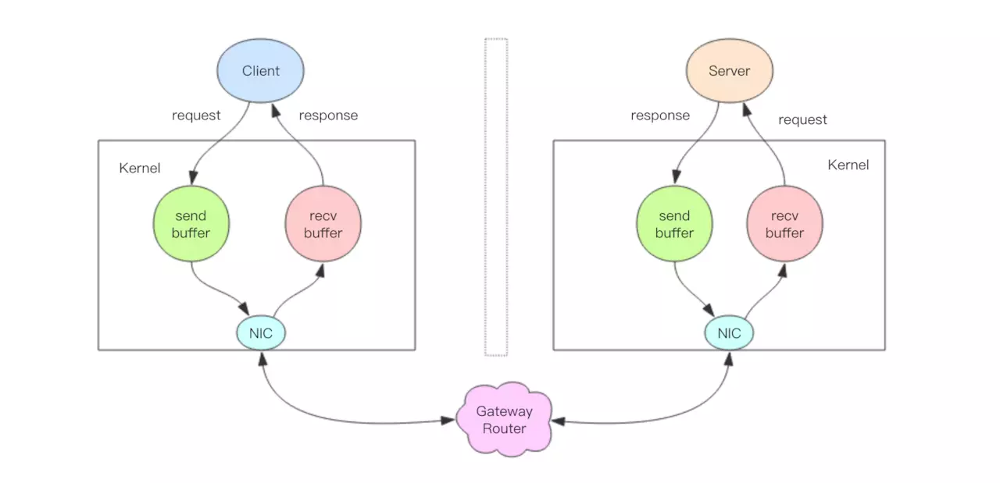

管道 #
Redis 管道 (Pipeline) 这个技术本质上是由客户端提供的，跟服务器没有什么直接的关系。
Redis 的消息交互 #
当我们使用客户端对 Redis 进行一次操作时，客户端将请求传送给服务器，服务器处理完毕后，再将响应回复给客户端。这要花费一个网络数据 包来回的时间。
如果连续执行多条指令，那就会花费多个网络数据包来回的时间。
管道操作的本质，服务器根本没有任何区别对待，还是收到一条消息，执行一条消息，回复一条消息的正常的流程。客户端通过对管道中的指令 列表改变读写顺序，合并 write 和 read 操作，就可以大幅节省 IO 时间。
管道压力测试 #
Redis 自带了一个压力测试工具 redis-benchmark，使用这个工具就可以进行管道测试。
首先我们对一个普通的 set 指令进行压测，QPS 大约 5w/s。
> redis-benchmark -t set -q
SET: 51975.05 requests per second
加入管道选项 -P 参数，它表示单个管道内并行的请求数量，看下面 P=2，QPS 达到了 9w/s。
> redis-benchmark -t set -P 2 -q
SET: 91240.88 requests per second
再看看 P=3，QPS 达到了 10w/s。
> redis-benchmark -t set -P 3 -q
SET: 102354.15 requests per second
但如果再继续提升 P 参数，发现 QPS 已经上不去了。因为这里 CPU 处理能力已经达到了瓶颈，无法再继续提升了。
管道本质 #

上图就是一个完整的请求交互流程图。我用文字来仔细描述一遍：
- 客户端进程调用
write将消息写到操作系统内核为套接字分配的发送缓冲send buffer。 - 客户端操作系统内核将发送缓冲的内容发送到网卡，网卡硬件将数据通过「网际路由」送到服务器的网卡。
- 服务器操作系统内核将网卡的数据放到内核为套接字分配的接收缓冲
recv buffer。 - 服务器进程调用
read从接收缓冲中取出消息进行处理。 - 服务器进程调用
write将响应消息写到内核为套接字分配的发送缓冲send buffer。 - 服务器操作系统内核将发送缓冲的内容发送到网卡，网卡硬件将数据通过「网际路由」送到客户端的网卡。
- 客户端操作系统内核将网卡的数据放到内核为套接字分配的接收缓冲
recv buffer。 - 客户端进程调用
read从接收缓冲中取出消息返回给上层业务逻辑进行处理。 - 结束。
write 操作只负责将数据写到本地操作系统内核的发送缓冲然后就返回了。剩下的事交给操作系统内核异步将数据送到目标机器。但是如果发
送缓冲满了，那么就需要等待缓冲空出空闲空间来，这个就是写操作 IO 操作的真正耗时。
read 操作只负责将数据从本地操作系统内核的接收缓冲中取出来就了事了。但是如果缓冲是空的，那么就需要等待数据到来，这个就是读操
作 IO 操作的真正耗时。
所以对于 value = redis.get(key) 这样一个简单的请求来说，write 操作几乎没有耗时，直接写到发送缓冲就返回，而 read 就会比
较耗时了，因为它要等待消息经过网络路由到目标机器处理后的响应消息,再回送到当前的内核读缓冲才可以返回。这才是一个网络来回的真正开销。
而对于管道来说，连续的 write 操作根本就没有耗时，之后第一个 read 操作会等待一个网络的来回开销，然后所有的响应消息就都已经回送
到内核的读缓冲了，后续的 read 操作直接就可以从缓冲拿到结果，瞬间就返回了。